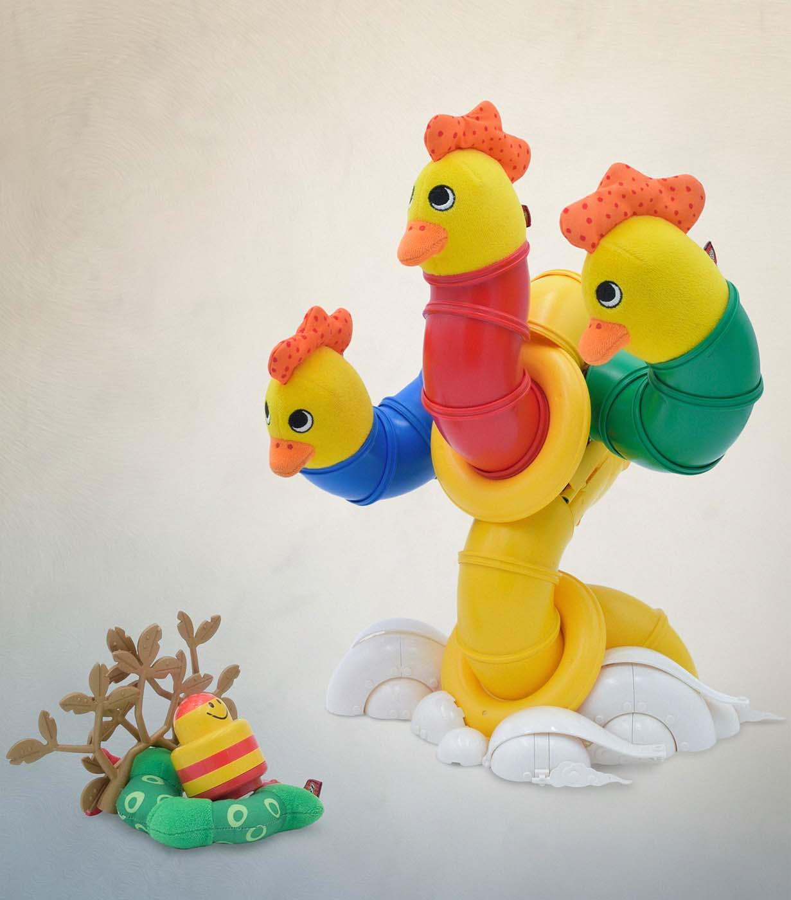
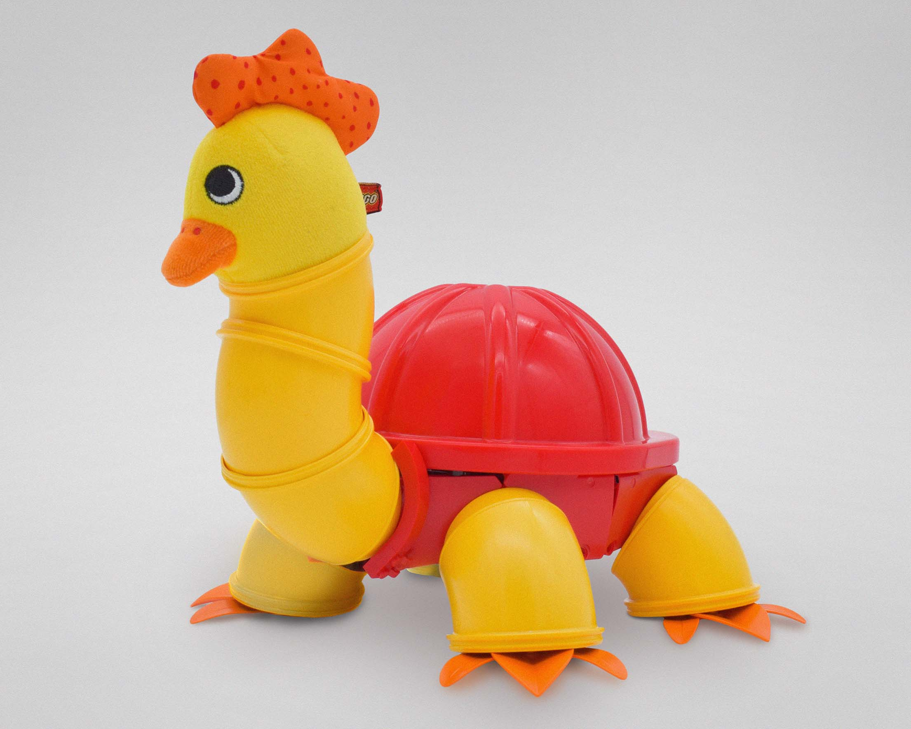
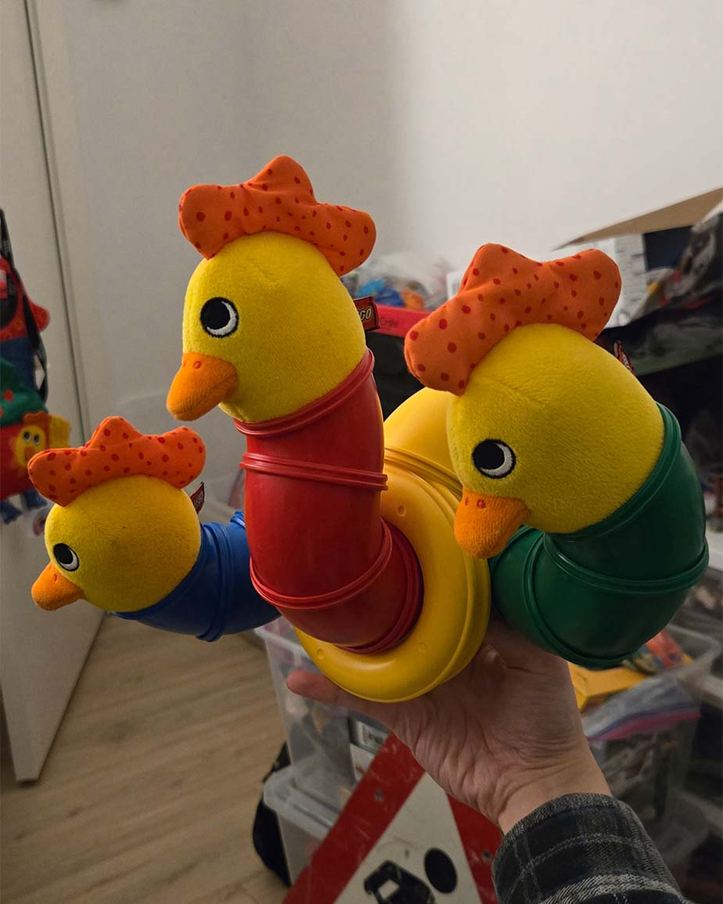
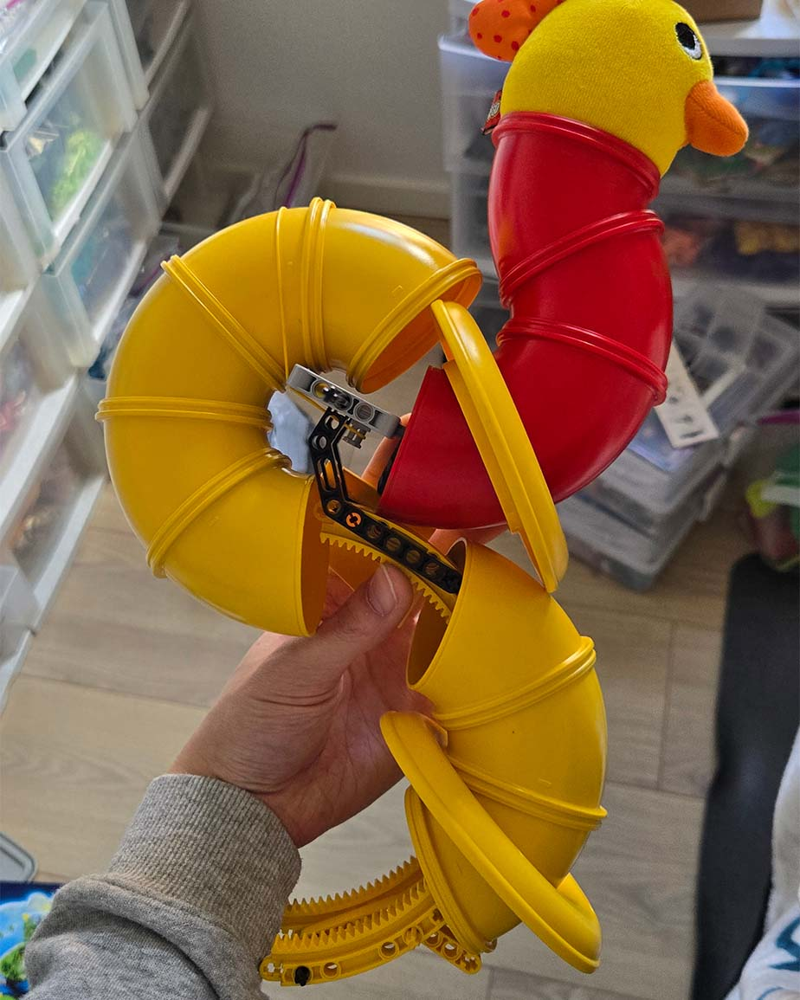
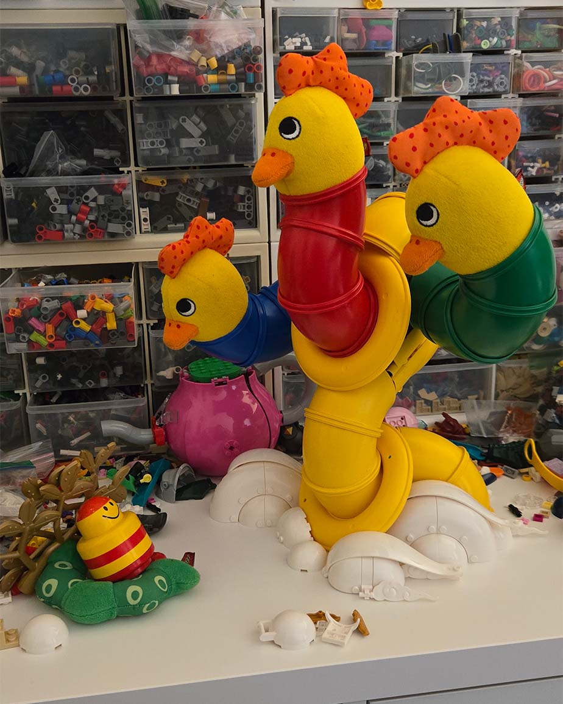
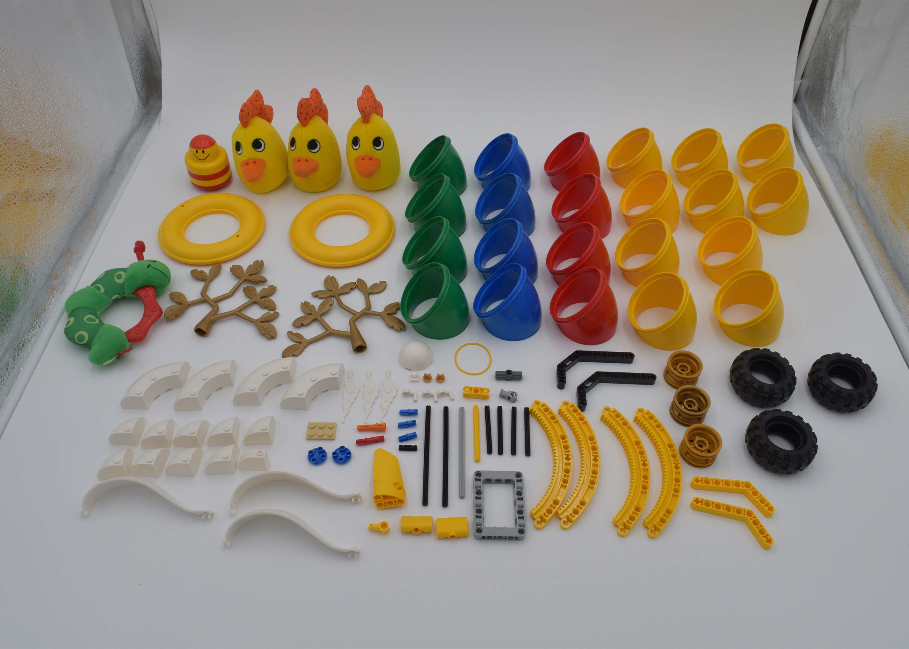
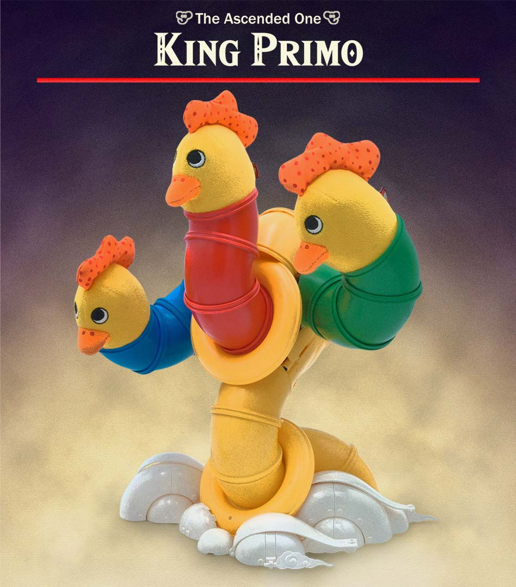

The Creation of Primo

I've been waiting for this moment - the moment to make another Primo chicken build. Last year, I made what was a rather large build for Rogue Olympics; however, my collection of wacky parts has increased since moving to Denmark. What's better than one Primo chicken? Three Primo chickens.

"Hard Shelled Hen" from Rogue Olympics 2025
"From Above"
The theme for this round was "From Above". I told myself I have to try to at least squeeze in one Primo build this year, and this theme was the perfect candidate. "From Above" lends itself to heavenly deities and gods, so I started to just mash Duplo tubes and chicken heads together until I got a sort of amorphous, biblically accurate form.

Building Big on a Limit
As with every Rogue Olympics round, I had a limit of 101 parts. The Duplo parts inherently contribute to the size; however, there was the matter of optimizing the internals to be parts efficient and stable. I used a variety of Technic liftarms to create a skeleton to hold up the tubes. In particular, the rotation gear liftarms work nicely to guide the tubes while providing strength.

You might notice a funky connection going on with the upper tubes on the back. In order to save on parts, I used a Technic rubber band to connect the entire upper tube assembly. The band acts in compression, bringing the assembly to the frame, and the Duplo disc and black Technic liftarms stop it from being drawn in further. This was the most efficienct way to connect this as it only took one rubber band rather than who knows how many Technic pieces.

what a strong rubber band
Composition
For the composition, I was mostly inspired by the famous Creation of Adam painting. Of course, this didn't quite fit with the verticality of the build, but the background colors and general layout draw parallels from that painting. Roblox Primo dude lies on a Primo caterpillar surrounded by some Little Robots tree branches and stares at King Primo, surrounded by clouds. I think King Primo was about 62 parts, so I had plenty of parts remaining to make some clouds and add to the atmosphere.

King Primo
This build uses 98 pieces. Pretty close to the limit this time! When I was sharing WIPs, a friend sent a King Gleeok image, so this week's funny edit is inspired by that :)

